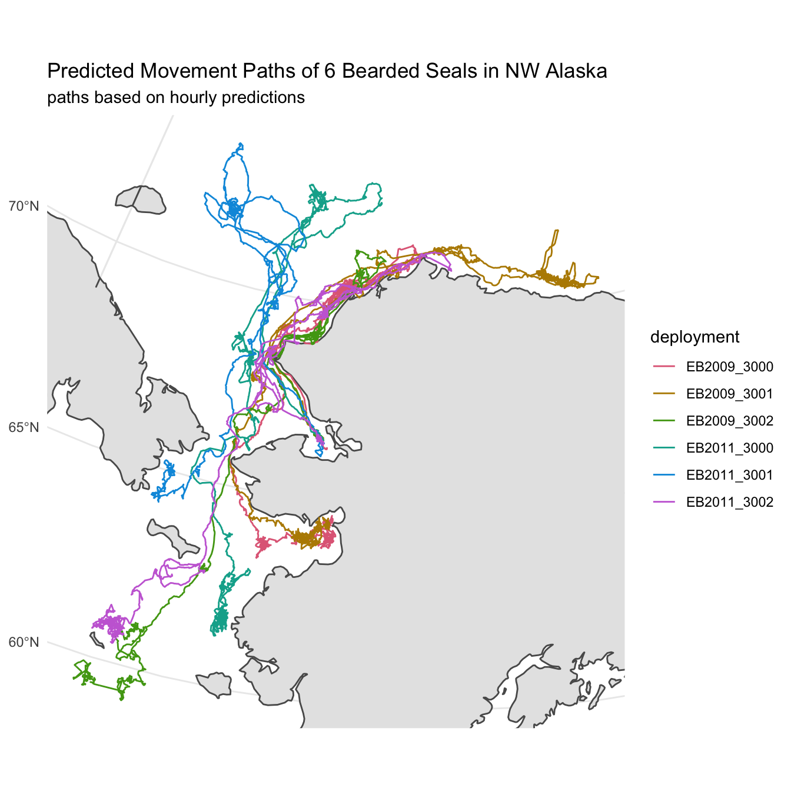
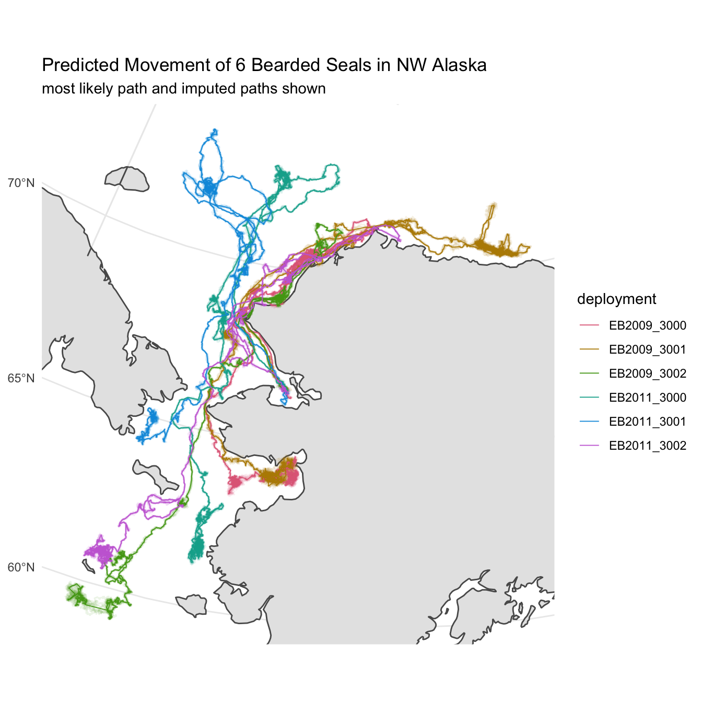

library(dplyr)
library(purrr)
library(tidyr)
library(crsuggest)
library(crawl)
library(crawlUtils)
library(sf)
library(pathroutr)Easier crawl-ing with crawlUtils
In recent months, the crawlUtils package has been developed to assist with and streamline the most common pipelines for modeling animal movement with the crawl and pathroutr packages. These approaches won’t work for everyone in every situation. But, they are good starting points and, hopefully, allow you to proceed quickly from a tidy data set of observations to a fitted model with predicted tracks and locations.
Prepare Data for crawlUtils
We’re going to start with our sf simple feature collection that has been processed with the speed, distance, and angle filter. While exploring and mapping the observations, the crsuggest package was used to determine an optimal coordinate reference system for our data. In the end, you know your data and your region the best and this knowledge should form the basis of your decision regarding the CRS you will use.
Since we’ve already explored our data with maps using the top CRS suggested, we’ll continue with that
akbs_epsg <- crsuggest::suggest_top_crs(akbs_locs)
akbs_locs <- akbs_locs %>%
sf::st_transform(akbs_epsg)The crwUtils package has some expectations regarding the column names that we’ll need to adjust in our data. Namely, we need to include the number of satellites for fastLoc GPS observations within the quality column and our date column needs to be renamed to datetime.
There are also some additional columns required so that multiple source data types (FastGPS, Argos least-squares, and Argos Kalman filter) can be used simultaneously within the same deployment. This is handled for us by simply calling the cu_add_argos_cols() function. Note, use of this function does require the following columns with exact names:
- type, indicate the type of location,
- quality which indicates the Argos quality of the location,
- the Argos KF diagnostics: error_semi_major_axis_, error_semi_minor_axis, and error_ellipse_orientation
Because our data set already has these columns, there’s no additional edits needed and we can just call the function with no arguments.
akbs_locs <- akbs_locs %>%
mutate(
quality = case_when(
type == "FastGPS" ~ as.character(num_sats),
TRUE ~ quality
),
type = case_when(
type == "User" ~ "known",
TRUE ~ type
)) %>%
rename(
datetime = date
) %>%
cu_add_argos_cols()Fit Basic CTCRW Model
We’re now ready to, finally, fit our CTCRW model with crawl. Because we have multiple deployments that can be fit independently, we need to make one final enhancement to our tidy data structure — created a nested tibble. Nesting takes advantage of list columns in R and allows us to store data objects within our tibble. In this case, we’ll create a single row for each deployment and our data will be stored within a special data column. As we progress through the fitting process, we’ll store results such as model fits and predictions as additional columns.
akbs_locs <- group_by(akbs_locs, deploy_id) %>%
tidyr::nest()Now, we can proceed to fit a CTCRW movement model for each of our deployments. The results of each fit will be stored in the fit column. Previous examples for this step often required careful attention and customization of various model parameters. crawlUtils aims to provide a generalized solution that should work for most scenarios.
akbs_locs <- akbs_locs %>%
mutate(
fit = cu_crw_argos(data)
)While fitting the model, you may see a warning that indicates: > Warning: Animal 1 has both LS and KF Argos location types or other unknown types! > Keeping KF becuase KF represents the larger percentage of the observations.
This is because, currently, it’s not possible to accommodate both the Kalman Filter (KF) error and the Least Squares (LS) quality error (e.g. A, B, 0, 1, 2, 3). The function will examine your data and keep the error that is used across the majority of locations in that deployment. It is possible (preferable) to have both KF or LS and FastGPS locations within the same deployment.
Let’s take a quick look at the first model fit to make sure there aren’t any red flags in the result. If you want to look at all the fits with one call you can eliminate the pluck(1) portion in the code below.
akbs_locs %>% pull(fit) %>% pluck(1)
Continuous-Time Correlated Random Walk fit
Models:
--------
Movement ~ 1
Error ~0 + ln.sd.x ~0 + ln.sd.y ~error.corr
Parameter Est. St. Err. 95% Lower 95% Upper
ln tau.x ln.sd.x 1.000 . . .
ln tau.y ln.sd.y 1.000 . . .
ln sigma (Intercept) 7.652 0.014 7.624 7.68
ln beta (Intercept) 2.220 0.176 1.876 2.564
Log Likelihood = -101576.783
AIC = 203157.565 Predict Locations
With our model fits in hand, we can use that model to predict locations at regular (or otherwise specified) intervals. These predictions will form the basis of our subsequent analyses. And, as such, you should consider the prediction interval carefully. The continuous nature of crawl’s approach means you can always come back and predict again at a different interval without having to re-fit the model.
There are some built in parsers for time so you can say, for example predTime="1 hours" or predTime="6 hours" or predTime="20 minutes" and the prediction function will generate the intervals for you. You can also provide a custom vector of prediction times. Note that we specify as_sf=TRUE so an sf point object is returned.
akbs_locs <- akbs_locs %>%
mutate(
pred = cu_crw_predict(fit, predTime="1 hours", as_sf=TRUE)
)Now that we have our predictions, let’s revisit one of our previous maps and, this time, create a path based on the hourly predictions instead of the raw observations.
The first thing we need to do is extract the predictions from our nested tibble. We can accomplish this with the tidyr::unnest() function and, then, filter the resulting data to only include predicted locations (locType == "p"). The sf geometry data is preserved but we need just do a quick st_as_sf() call to reestablish our data as and sf object. Lastly, as before, we’ll want to convert the predicted point data into lines.
library(stringr)
akbs_preds <- akbs_locs %>%
tidyr::unnest(cols=pred) %>%
dplyr::filter(locType == "p") %>%
dplyr::select(deploy_id, datetime, geometry) %>%
sf::st_as_sf() %>%
dplyr::arrange(datetime) %>%
dplyr::mutate(deploy_id = stringr::str_sub(deploy_id, 1,11)) %>%
dplyr::summarise(do_union = FALSE) %>%
sf::st_cast("MULTILINESTRING")library(colorspace)
library(ggplot2)
library(rnaturalearth)
library(rnaturalearthdata)
world <- ne_countries(scale = "medium",returnclass = "sf") %>%
sf::st_make_valid() %>%
sf::st_transform(akbs_epsg)
map <- ggplot() + geom_sf(data = world) +
geom_sf(data = akbs_preds, aes(color = deploy_id),
lwd = 0.5) +
coord_sf(
xlim = sf::st_bbox(akbs_preds)[c(1,3)],
ylim = sf::st_bbox(akbs_preds)[c(2,4)]) +
scale_color_discrete_qualitative(
palette = "Dark 3",
name = "deployment") +
labs(title = "Predicted Movement Paths of 6 Bearded Seals in NW Alaska",
subtitle = paste0("paths based on hourly predictions")) +
theme_minimal()
map
Multiple Imputation for Uncertainty
The predicted path represents the most likely movement for the animal given the observed locations and their reported error. A single line, however, doesn’t fully communicate the uncertainty associated with each prediction. To better demonstrate this, we’ll rely on multiple imputation from our model fit to create a sample of additionally possible tracks for each deployment. These tracks along with the predicted track should communicate a better picture of where the animals might have traveled during the deployment.
The crawlUtils package provides a helper function, cu_crw_sample, that handles creation of tracks via multiple imputation. All we need to provide are the number of simulated tracks we’d like to generate and the desired prediction interval. To keep things from exploding computationally, we’ll set the number of generated tracks at 8 and keep our prediction time to 1 hour.
akbs_locs <- akbs_locs %>%
mutate(
sims = cu_crw_sample(size=8, fit, predTime="1 hours", as_sf=TRUE)
)As before, we need to extract the pertinent spatial information from our nested tibble. In this case, each of our 8 simulated tracks are stored within a list of sf objects in the sims column. We need to unnest the sims column like before but, also, combine the 8 separate simulated tracks into a single object.
Oh, and then don’t forget to convert each of the simulations into lines!
akbs_sims <- akbs_locs %>%
rowwise() %>%
mutate(sims = list(bind_rows(sims, .id = "sim_id"))) %>%
unnest(cols=sims) %>%
dplyr::select(deploy_id, sim_id, datetime, geometry) %>%
st_as_sf() %>%
group_by(deploy_id,sim_id) %>%
dplyr::arrange(datetime) %>%
dplyr::mutate(deploy_id = stringr::str_sub(deploy_id, 1,11)) %>%
dplyr::summarise(do_union = FALSE) %>%
sf::st_cast("MULTILINESTRING")Now, we can plot all of these additional lines along with our original predicted tracks. We can build on our previous plot and simply add another layer to plot the predicted tracks but at a slightly smaller size and with some alpha transparency.
world <- ne_countries(scale = "medium",returnclass = "sf") %>%
sf::st_make_valid() %>%
sf::st_transform(akbs_epsg)
map <- ggplot() + geom_sf(data = world) +
geom_sf(data = akbs_sims, aes(color = deploy_id), alpha = 0.1, size=0.5) +
geom_sf(data = akbs_preds, aes(color = deploy_id),
size = 0.3) +
coord_sf(
xlim = sf::st_bbox(akbs_sims)[c(1,3)],
ylim = sf::st_bbox(akbs_sims)[c(2,4)]) +
scale_color_discrete_qualitative(
palette = "Dark 3",
name = "deployment") +
labs(title = "Predicted Movement of 6 Bearded Seals in NW Alaska",
subtitle = paste0("most likely path and imputed paths shown")) +
theme_minimal()
map